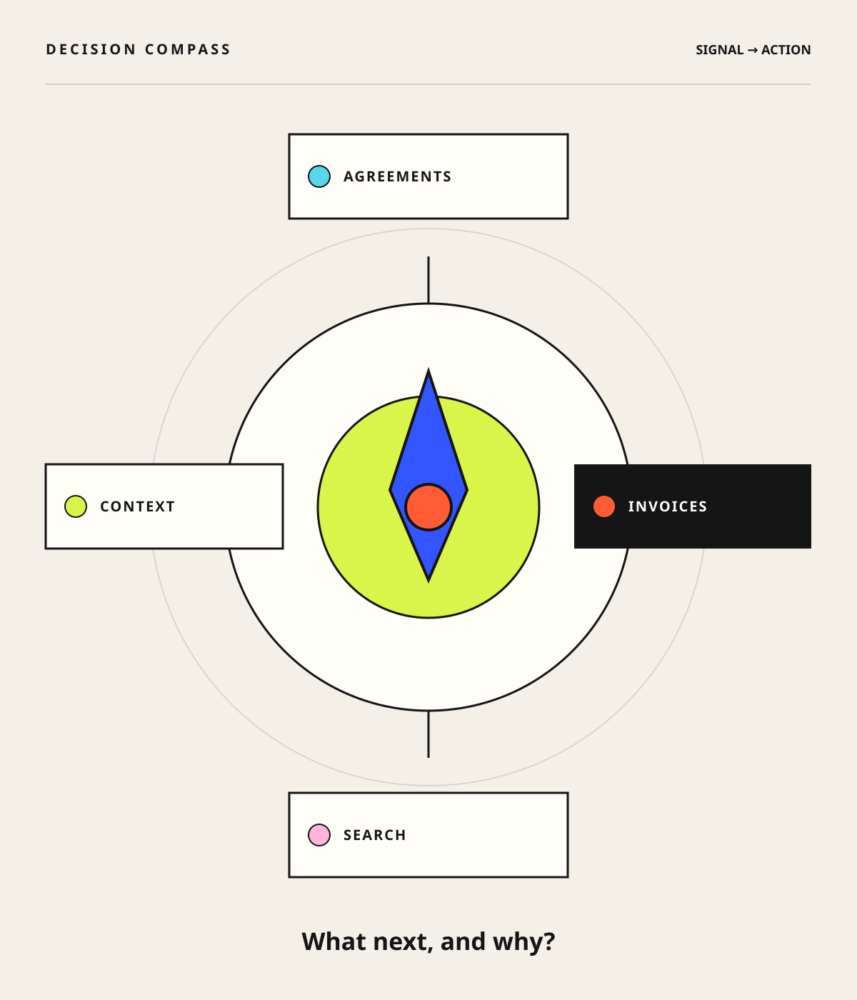

Orientation
Stable customer context
A primary traversal anchor keeps the result model consistent across search inputs.
Case 02 · Strategy + IA · 2025–2026
Shaping fragmented commercial data into a coherent seller decision surface across search, agreements, subscriptions, renewals, pricing, proposals, invoices, and history.

Sellers needed to understand agreements, subscriptions, renewals, concessions, pricing, invoices, proposals, and commercial history across fragmented sources. The product risked becoming disconnected reports shaped by backend structure, redundant history, unclear naming, and incomplete data.
I helped reframe the product; explored search and IA; challenged low-value or unsafe detail; partnered on seller validation; and shaped agreement, invoice, pricing, proposal, history, renewal, and concession patterns.
Status discipline: the evidence supports clearer product direction and mixed delivered/in-flight fundamentals, not a completed “single pane” transformation.
I mapped customer, billing account, billing profile, agreements, subscriptions, proposals, orders, invoices, amendments, and renewals. The hierarchy centered three questions: what does the customer have, what requires attention, and what can the seller do next?
A primary traversal anchor keeps the result model consistent across search inputs.
Use authoritative platform data and expose deep links where local detail is incomplete.
Preserve agreement transition context while hiding or phasing low-value history.
A design decision supported up to ten recently entered billing accounts at user level.
Keep hierarchy, filters, disclosure, and authoritative exits.
Billing-cycle and profile relationships carry different intent and governance.
Do not require profile knowledge to find invoices; expose it for payment context.
Legacy exposure alone is not enough reason to duplicate confusing or incomplete data.
The initial implementation constrained cloud/channel scope and kept dependencies explicit.
Use seller questions, prototypes, selective rollout, and telemetry rather than a generic pilot claim.
A coherent product can span several surfaces when users retain orientation and know what source to trust.
Specification and UX walkthroughs for three priority fundamentals were recorded complete. That is walkthrough completion, not GA.
Engineering required complete mocks, screens, controls, and functional specifications before development review and estimation.
Leadership tracked a September completion target, a July platform assumption, and a 4.0 CSAT ambition. None is presented as achieved.
External data/platform capabilities, agreement redesign, seller review, feature-level GA, and production measures remained mixed or open.
Search definitions, source entities, modern/classic behavior, filters, recent accounts, and agreement-transition logic all required implementation clarification. Formal accessibility conformance is not established; “accessibility” in one workstream title referred primarily to findability.
The team established a product narrative around seller decisions and foundational capabilities, plus concrete IA choices for agreements, invoices, billing profiles, renewals, history, and source-system links. No complete product-level outcome metric is available.
Feature status, seller sample and method, accepted decisions, telemetry, one rejected alternative, one implemented reconstruction, and approved acronym treatment.